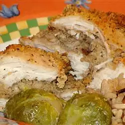

Oven Roasted Stuffed Chicken Breasts

Learn how long to cook stuffed chicken breasts with this recipe that always impresses dinner guests! The chicken breasts are stuffed with a ricotta cheese and walnut mixture.
Ingredients
- 1 cup part skim milk ricotta cheese
- ¾ cup finely chopped walnuts
- ½ cup grated Parmesan cheese
- ½ cup dry bread crumbs
- 1 teaspoon dried oregano
- 6 boneless chicken breast halves, with skin
- 2 tablespoons vegetable oil
Directions
- Preheat the oven to 350 degrees F (175 degrees C). Lightly grease a large baking dish.
- Mix ricotta cheese, walnuts, Parmesan cheese, bread crumbs, and oregano in a bowl.
- Loosen the skin on the chicken breasts to form a pocket, and stuff with the ricotta cheese mixture. Arrange chicken breasts in a single layer in the prepared baking dish, and brush with oil.
- Bake in the preheated oven until chicken is no longer pink and juices run clear, about 45 minutes.